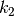
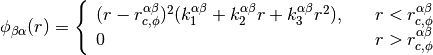

mapp.md.atoms.ff_fs¶
-
atoms.ff_fs(A, t1, t2, k1, k2, k3, r_c_phi, r_c_rho)¶ Finnis-Sinclair EAM
Assigns Finnis-Sinclair EAM force field to system. For explanation of the parameter see the Notes section.
Parameters: A : double[nelems]

t1 : double[nelems][nelems]

t2 : double[nelems][nelems]

k1 : symmetric double[nelems][nelems]

k2 : symmetric double[nelems][nelems]

k3 : symmetric double[nelems][nelems]

r_c_phi : symmetric double[nelems][nelems]

r_c_rho : symmetric double[nelems][nelems]

Returns: None
Notes
This is the analytical form of Finnis-Sinclair Embedded Atom Method (EAM) potential

where

and

Examples
Iron Carbon mixture
>>> from mapp import md >>> sim=md.cfg("configs/Cementite.cfg") >>> sim.ff_fs(A=[1.8289905,2.9588787],t1=[[1.0,10.024001],[10.482408,0.0]], t2=[[0.504238,1.638980],[3.782595,-7.329211]], k1=[[1.237115],[8.972488,22.061824]], k2=[[-0.35921],[-4.086410,-17.468518]], k3=[[-0.038560],[1.483233,4.812639]], r_c_phi=[[3.40],[2.468801,2.875598]], r_c_rho=[[3.569745],[2.545937,2.892070]])